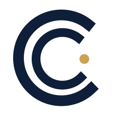
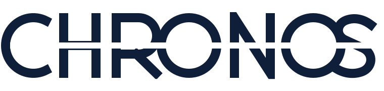
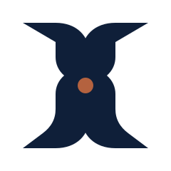

Da avaliação à constância
O resultado não é o pico. É o percurso acompanhado que se torna hábito.
As direções partem da estratégia — acompanhamento integrado, constância e tempo bem vivido — e não de símbolos genéricos de academia. São estudos para decisão interna, ainda sem status de aprovação.
A Chronos não é clínica, academia de performance ou wellness genérico. Ela precisa parecer precisa sem ser fria, ativa sem ser agressiva e premium sem ostentação.
O resultado não é o pico. É o percurso acompanhado que se torna hábito.
Fisioterapia e educação física mantêm papéis próprios, mas enxergam a pessoa por inteiro.
Evitar cronômetro, halter, corpo atlético, cruz médica e qualquer atalho literal da categoria.
Use os controles de cor para testar cada assinatura nos três fundos principais. As métricas são uma avaliação estratégica provisória — não pesquisa de preferência.

Dois percursos abertos formam um C sem desenhá-lo literalmente. O ponto dourado é a pessoa: não está no centro de uma mira, mas no campo de atenção dos dois saberes.
É a direção mais próxima do nome Chronos e da ideia de continuidade. Substitui o relógio por um sistema orbital mais calmo.
Leitura rápida, ótima redução e ligação imediata com constância.
Pode lembrar sinal de conectividade se as aberturas e o ponto não forem refinados.

A própria palavra é o símbolo. Um intervalo horizontal recorrente atravessa as sete letras como medida, pausa e repetição. O nome permanece dominante — vantagem decisiva para fachada e reconhecimento local.
É a rota menos dependente de um ícone explicativo e, por isso, a mais atemporal. A assinatura compacta poderá nascer depois do C, sem competir com o nome.
Alta presença de marca, excelente fachada e menor risco de cair em clichê de academia ou clínica.
O corte não pode parecer “glitch”; sua espessura precisa ser óptica e desaparecer na redução mínima.

Duas estruturas complementares enquadram um ponto central. O desenho fala de avaliação, apoio e alinhamento; no conjunto, sugere discretamente um H — segunda letra do nome — sem usar corpo, olho ou cruz.
É a rota que melhor transforma o diferencial operacional em símbolo: duas competências preservadas, uma pessoa vista por inteiro.
Maior densidade estratégica e bom potencial para padrões, sinalização e arquitetura.
Pode sugerir ampulheta ou software técnico se o eixo for rígido demais.
A escolha não é “qual desenho é mais bonito”, mas qual ativo queremos que a Chronos possua por anos.
| Direção | Ideia que lidera | Melhor uso | Distinção | Risco principal |
|---|---|---|---|---|
| Órbita habitada | Tempo + continuidade | Avatar, selo, uniforme | Conectividade / radar | |
| Cadência | Nome + repetição | Fachada, digital, editorial | Corte parecer tecnológico | |
| Dois olhares | Integração + cuidado | Sistema, ambiente, sinalização | Ampulheta / rigidez |
Para uma marca local que precisa ser lembrada pelo nome, o wordmark tem a melhor combinação de presença, longevidade e baixa dependência de explicação. “Dois olhares” fica muito perto e oferece o conceito mais rico; pode superar Cadência se a próxima rodada resolver a leitura de ampulheta sem perder integração.